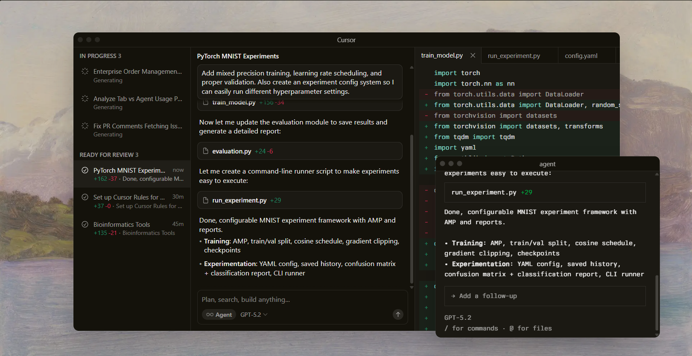
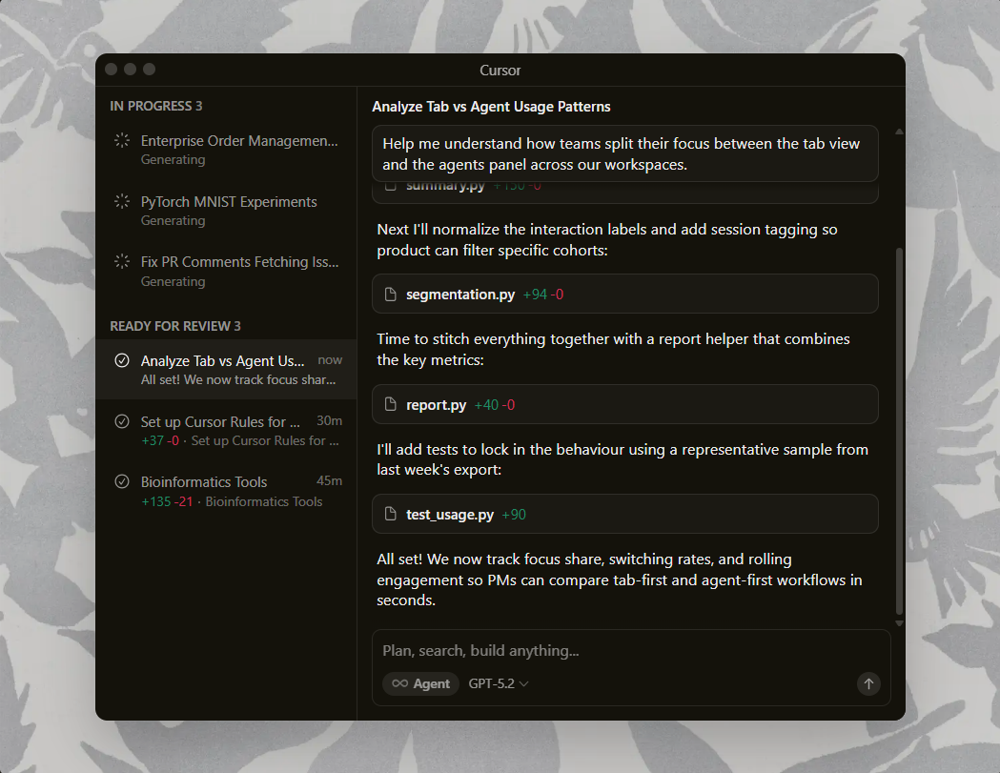
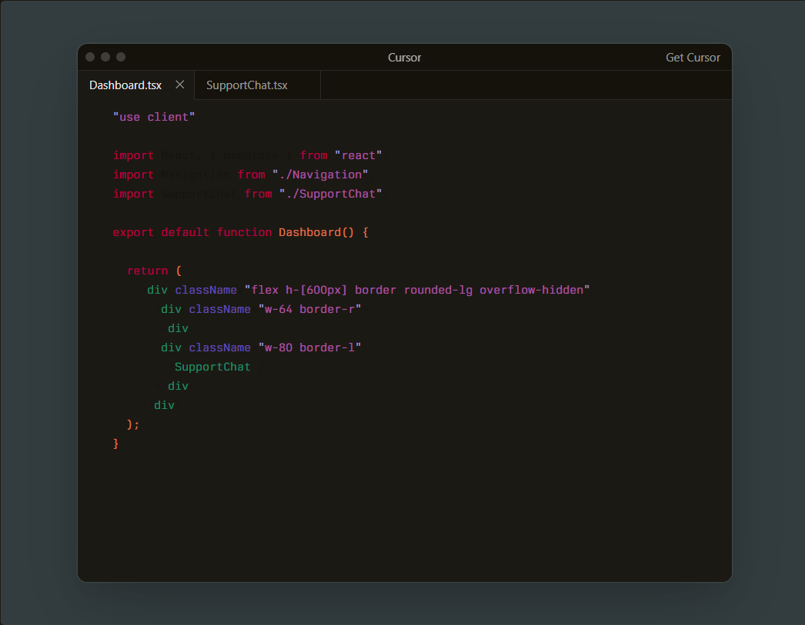
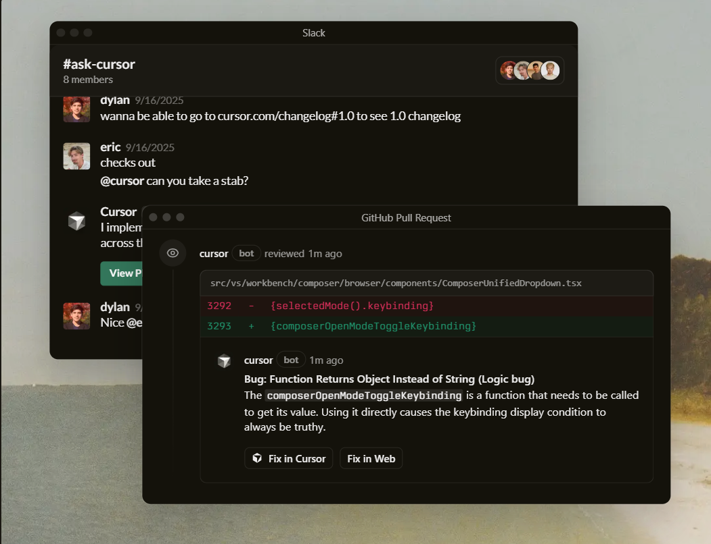
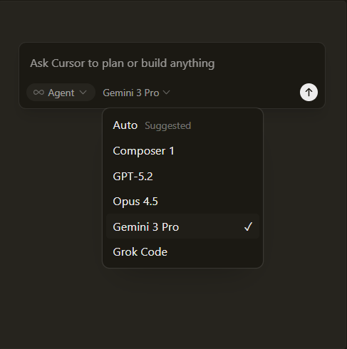
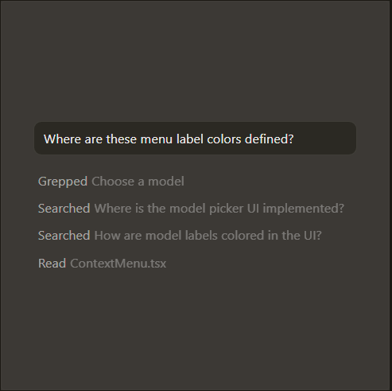

Built to make you extraordinarily productive,
Cursor is the best way to code with AI.

Trusted everyday by millions of professional developers.


Agents turns ideas into code
A human AI programmer, orders of
magnitude more effective than any
developer alone


Magically accurate autocomplete
Our custom tab model predicts
your next action with striking speed
and precision
Everywhere software gets built
Cursor is in GitHub reviewing your PRs,
a teamate in Slack, and anywhere
else you work.

The new way to build software.
“It was night and day from one batch to another, adoption went from single digits to over 80%. It just spread like wildfire, all the best builders were using Cursor.”

“My favorite enterprise AI service is Cursor. Every one of our engineers, some 40,000, are now assisted by AI and our productivity has gone up incredibly.”

“The best LLM applications have an autonomy slider: you control how much independence to give the AI. In Cursor, you can do Tab completion, Cmd+K for targeted edits, or you can let it rip with the full autonomy agentic version.”

“Cursor quickly grew from hundreds to thousands of extremely enthusiastic Stripe employees. We spend more on R&D and software creation than any other undertaking, and there's significant economic outcomes when making that process more efficient.”

“The most useful AI tool that I currently pay for, hands down, is Cursor. It's fast, autocompletes when and where you need it to, handles brackets properly, sensible keyboard shortcuts, bring-your-own-model... everything is well put together.”

“It's definitely becoming more fun to be a programmer. We are at the 1% of what's possible, and it's in interactive experiences like Cursor where models like GPT-5 shine brightest.”

Stay on the frontier


Change Log
Subagents, Skills, and Image Generation
Subagents, Skills, and Image Generation
Subagents, Skills, and Image Generation
Subagents, Skills, and Image Generation